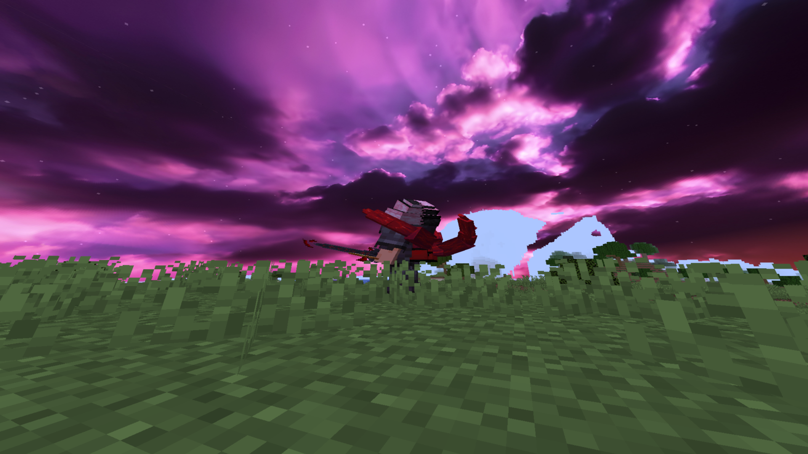
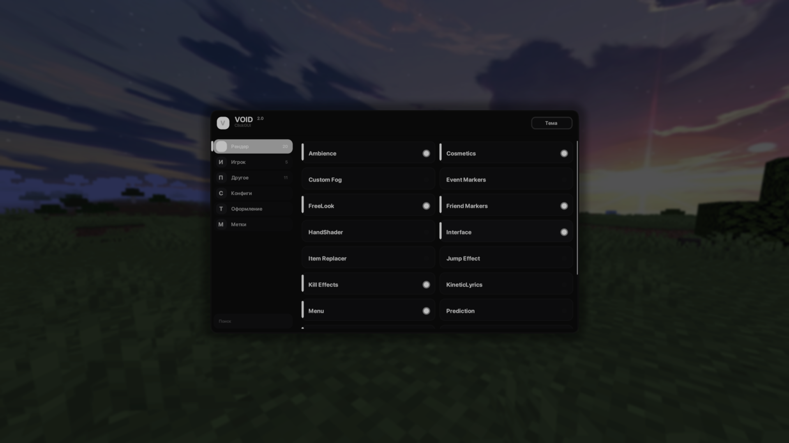

Эффекты удара
Красивые частицы при попадании по врагу. Каждый хит ощущается и виден чётко.
ВИЗУАЛЬНЫЙ МОД ДЛЯ MINECRAFT
VOID — визуальный мод с красивыми эффектами и функциями для PVP и PVE. Яркие удары, металлические kill'ы, чистый обзор и стабильный FPS в любой битве.
Фичи
Всё настраивается из одного меню мода. Никаких шейдеров — только эффекты, которые помогают в бою и радуют глаз.
Красивые частицы при попадании по врагу. Каждый хит ощущается и виден чётко.
Эффекты и частицы при убийстве. Финальный удар выглядит эпично в PVP и PVE.
Убирай туман и лишние частицы дождя — видимость в бою важнее всего.
Индикаторы урона по мобам, эффекты критов и понятная картина боя с боссами.
Лёгкий мод без шейдеров. Стабильный FPS даже в замесах на 1.8 и на новых версиях.
Гибкое меню мода: включай и выключай каждую функцию, сохраняй свои пресеты.
Скриншоты
Каждый эффект в VOID работает на результат и выглядит стильно.


Захочешь заменить скриншоты — просто положи новые файлы поверх в папку img.
FAQ
Нет. VOID — это мод с визуальными эффектами и функциями для PVP/PVE. Он не нагружает видеокарту шейдерами и работает даже на слабых ПК.
VOID работает на популярных версиях для PVP. Все сборки проверяются в лаунчере VOID, так что просто запусти и играй.
Эффекты удара и kill'ов, чистый обзор без тумана, индикаторы урона по мобам, эффекты критов и многое другое. Всё настраивается в меню мода.
Да. Мод, лаунчер и все обновления полностью бесплатны. Поддержать проект можно в Телеграме.
Да, это лёгкий мод. А если у тебя старый ПК, в настройках есть режим «Жёсткая оптимизация» для ещё большего FPS.
Скачай лаунчер VOID и запусти мод с эффектами и функциями для PVP и PVE за 2 минуты.